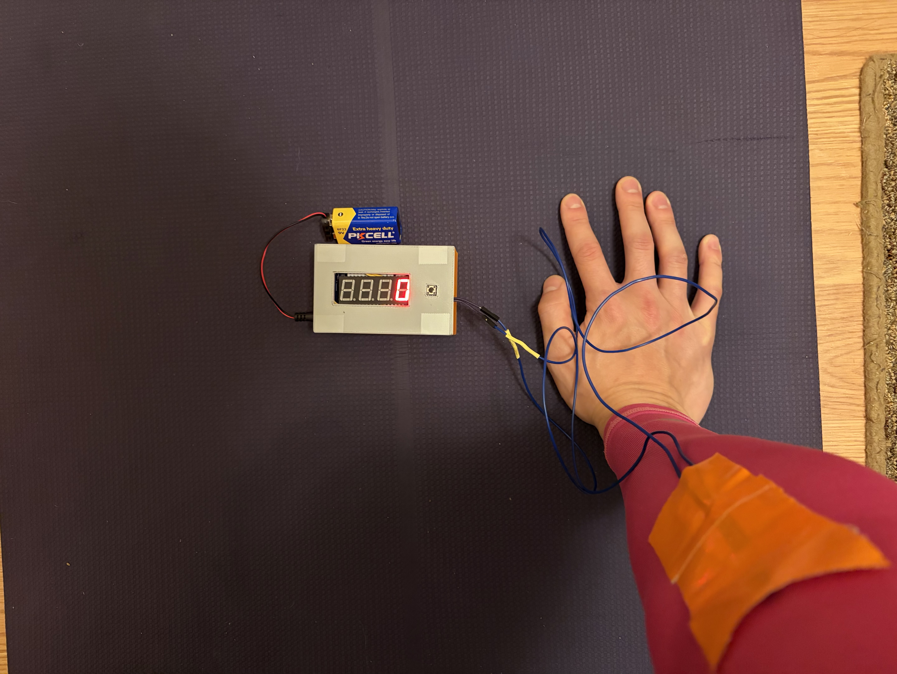
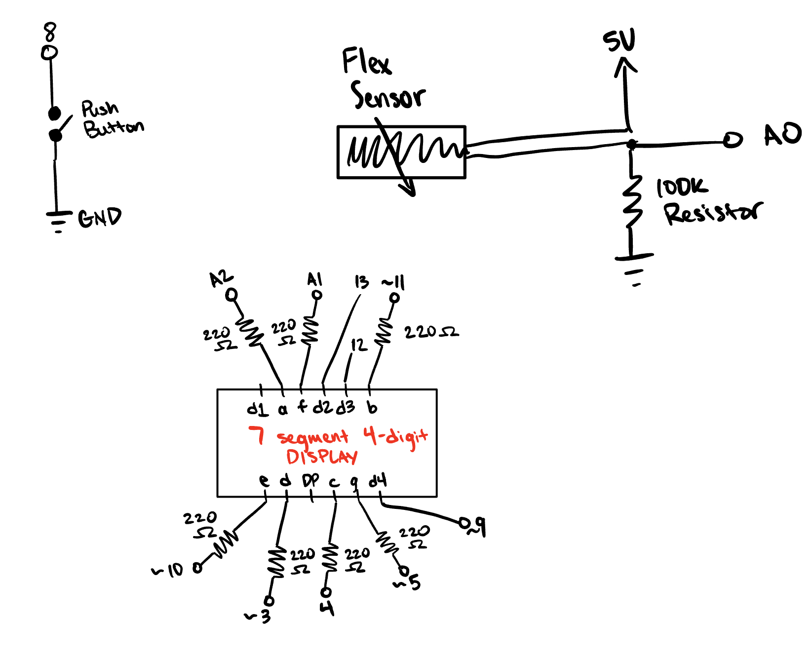
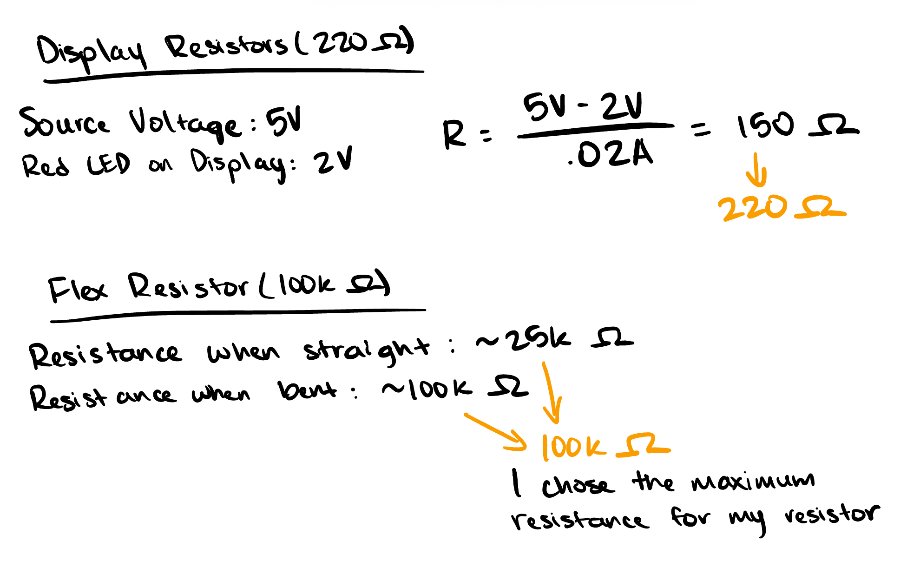
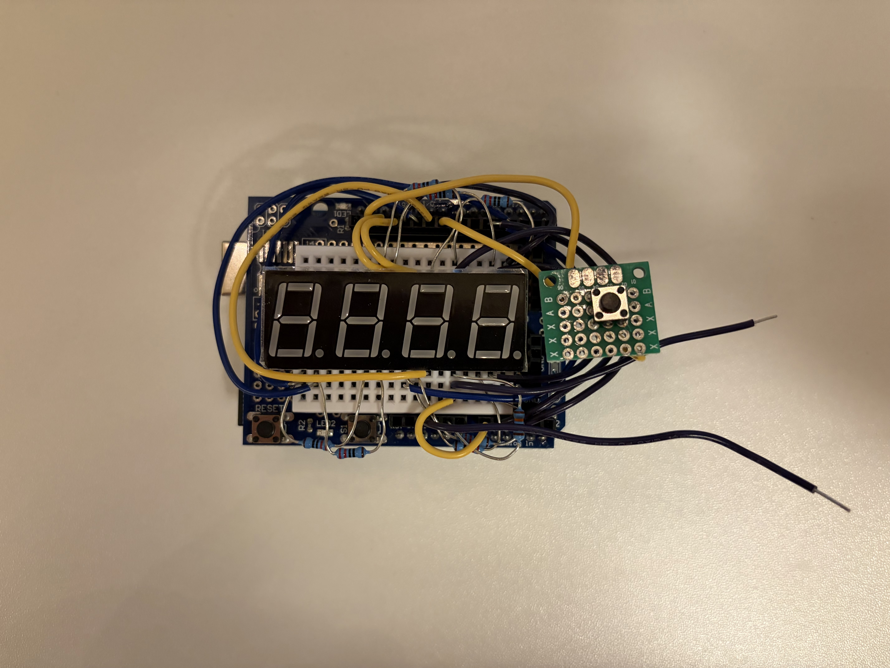
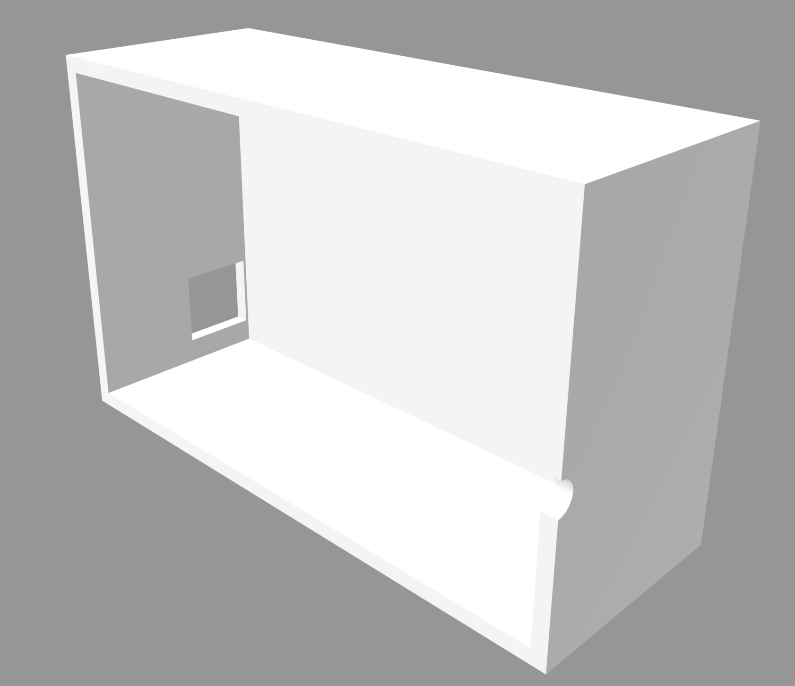
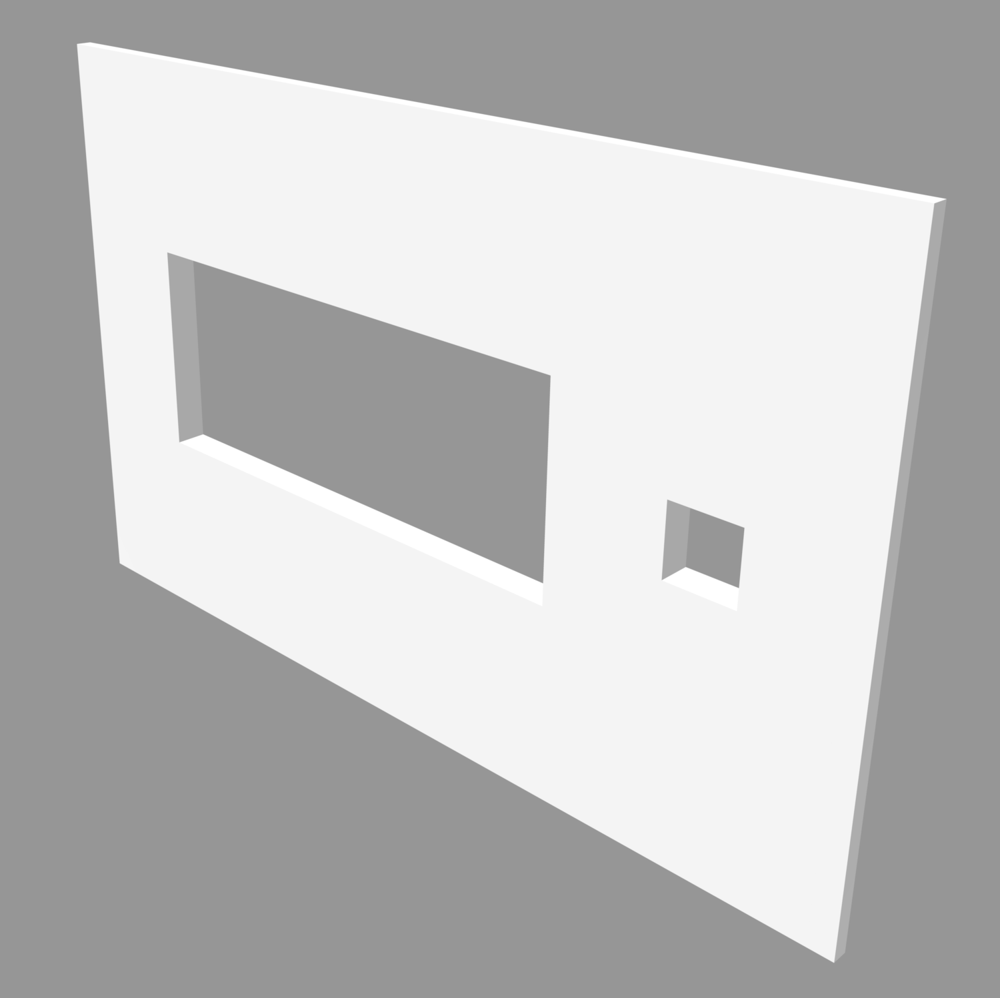

Here is all the documentation for my final project prototype, SleeveStat!
A wearable compression sleeve that calibrates the user's neutral arm position, then detects and counts completed push-ups using an embedded flex sensor. The output is a 7-segment display that is wired into the circuit, showing the count of pushups. The user has the ability to restart the count and re-calibrate the neutral position at any time with a push of a button.

This schematic shows the push button connected to pin 8 and ground. The flex sensor is connected to 5V, pin A0, and ground through a 100k ohm resistor. Finally, the 7 segment 4-digit display is connected to pins ~3, 4, ~5, ~9, ~10, ~11, 12, 13, A1, and A2 (~9, 12, and 13 are the only pins that don't have a 220 ohm resistor in between the connections).

This is how I calculated the 220 ohm resistors and 100k ohm resistor to use in my circuit.

This is the physical implementation of the circuit on the breadboard, arduino, and arduino extension.


This is the 3D sketch I designed for housing my circuit on Autodesk Fusion.
Below is the code used to control the arduino system.
#include "SevSeg.h"
// Initialize 7-segment display object
SevSeg sevseg;
// Pins for the 3 digits
byte digitPins[] = {13, 12, 9};
// Pins for segments A, B, C, D, E, F, G
byte segmentPins[] = {A2, 11, 4, 3, 10, A1, 5};
// Pin for the flex sensor signal
const int flexPin = A0;
// Pin for the pushbutton reset
const int buttonPin = 8;
// Variable to store number of completed reps
int pushupCount = 0;
// 0 = Straight (Up), 1 = Full Bend (Down)
int repState = 0;
// Straight calibrated dynamically during setup/reset
int STRAIGHT_THRESHOLD = 0;
// Must get deep to count (Min bend is ~770)
const int FULL_REP_THRESHOLD = 770;
// Function to handle auto-calibration sequence
void calibrateSensor() {
long sum = 0;
// Take 20 readings to get an average of the straight arm beginning position
for (int i = 0; i < 20; i++) {
sum += analogRead(flexPin);
delay(50);
}
// Calculate average and set threshold with a +40 margin for user "tolerance"
int average = sum / 20;
STRAIGHT_THRESHOLD = average + 40;
Serial.print("Calibration Complete. New Straight Threshold: ");
Serial.println(STRAIGHT_THRESHOLD);
}
void setup() {
// Start serial for tracking
Serial.begin(9600);
// Enable pull-up for reset button
pinMode(buttonPin, INPUT_PULLUP);
// DISPLAY CONFIGURATION
byte numDigits = 3;
bool resistorsOnSegments = true;
// Change to COMMON_ANODE if display is dark
byte hardwareConfig = COMMON_CATHODE;
bool updateWithDelays = false;
bool leadingZeros = false;
bool disableDecPoint = true;
// Initialize display library
sevseg.begin(hardwareConfig, numDigits, digitPins, segmentPins, resistorsOnSegments, updateWithDelays, leadingZeros, disableDecPoint);
// Set brightness to visible level
sevseg.setBrightness(90);
// Run initial calibration immediately
calibrateSensor();
}
void loop() {
sevseg.refreshDisplay();
// Read current sensor value from elbow
int flexValue = analogRead(flexPin);
// Reset Button Logic
if (digitalRead(buttonPin) == LOW) {
pushupCount = 0;
// Start fresh at beginning
repState = 0;
// Re-calibrate whenever the button is pressed
calibrateSensor();
}
// 1. Detect downward motion
// If we reach the bottom threshold and were previously up, enter first state
if (flexValue >= FULL_REP_THRESHOLD && repState == 0) {
repState = 1;
}
// 2. Detect return to neutral
// If we return to straight zone (within +40 of neutral) and were previously down, increment count of pushups
if (flexValue <= STRAIGHT_THRESHOLD && repState == 1) {
pushupCount++;
// RE-LOCK the state back to 0 until the user bends again
repState = 0;
}
Serial.println(flexValue);
// Update 3-digit display with current count
sevseg.setNumber(pushupCount);
}
When starting the system, the user is prompted to hold their arm in a straight/neutral position while pressing the button to not only restart the count
on the display, but also to calibrate the flex sensor to their unique straight arm position. From there, the sensor takes in the first 20 readings of
the user's straight arm position and sets the straight threshold to the average of those 20 quick readings. Then, the user begins their pushups and the
sensor has a set threshold for detecting a full bend of the arm. Once this bend threshold is passed, the system waits for the sensor to return a value
within 40 points of the previously calibrated straight arm threshold, at which point it counts a completed pushup and updates the display. This 40-point
buffer allows the user to not have to return to the exact neutral position every time. The user can reset the count and re-calibrate the straight arm
position at any time by pressing the button.
The flex sensor operates as a variable resistor in the circuit. As the user bends their elbow, the strain increases the sensor's internal resistance,
which changes the voltage output measured at the A0 pin. This continuous stream of data is converted into a digital value ranging from 0 to 1023. The
system samples the sensor about every 50 milliseconds to track the user's motion in real time.
Video of my prototype in action.